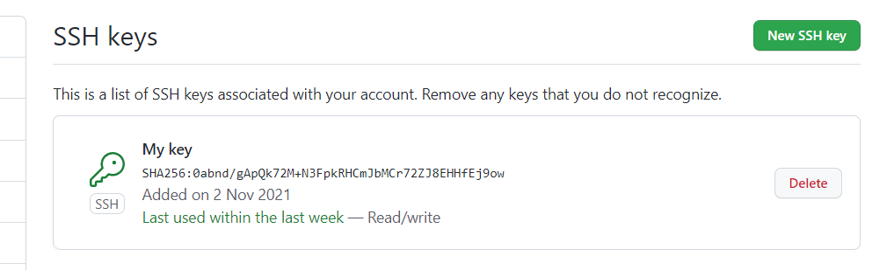

- git config --global user.name blabla - додати ім'я
- git config --global user.email blabal@bla - додати пошту
- git init - перетворює локальний каталог в репозиторій Git.
- git status - показує стан файлів у робочому каталозі.
- git add - додає файли в коміт.
- git commit - бере всі дані, додані до індексу за допомогою git add, і зберігає їх зліпок у внутрішній базі даних.
- git log - показує список з усіх коммітів, починаючи з найсвіжішого (за датою) комміту.
- git checkout - дозволяє переміщатись між гілками, котрі створені за допомогою git branch.
- git branch - створює, перераховує, перейменовує та видаляє гілки.
- git push - відправляє у віддалений репозиторій "зліпки" наших проектів.
- git pull - відповідає за скачування даних із сервера. Процес дуже схожий на клонування репозиторію, але тут завантажуються не всі комміти, а лише нові.
- git merge - збирає з відаленного репозиторію всі зміни, яких у вас поки що немає і зберігає їх локально.
- git clone - створює з існуючого репозиторію його клон.
.gitignore - використовується для виключення передачі певних файлів або каталогів у віддалений репозиторій.
Advanced
- git revert - скасовує дії минулих коммітів, створюючи новий, що містить усі скасовані зміни.
- git reset
- git rebase
- git cherry-pick - переносить конкретні комміти з одного місця, в інше.
- git stash - ховає зміни у файлах та зберігає ці зміни окремо, щоб потім можна було їх повернути.
